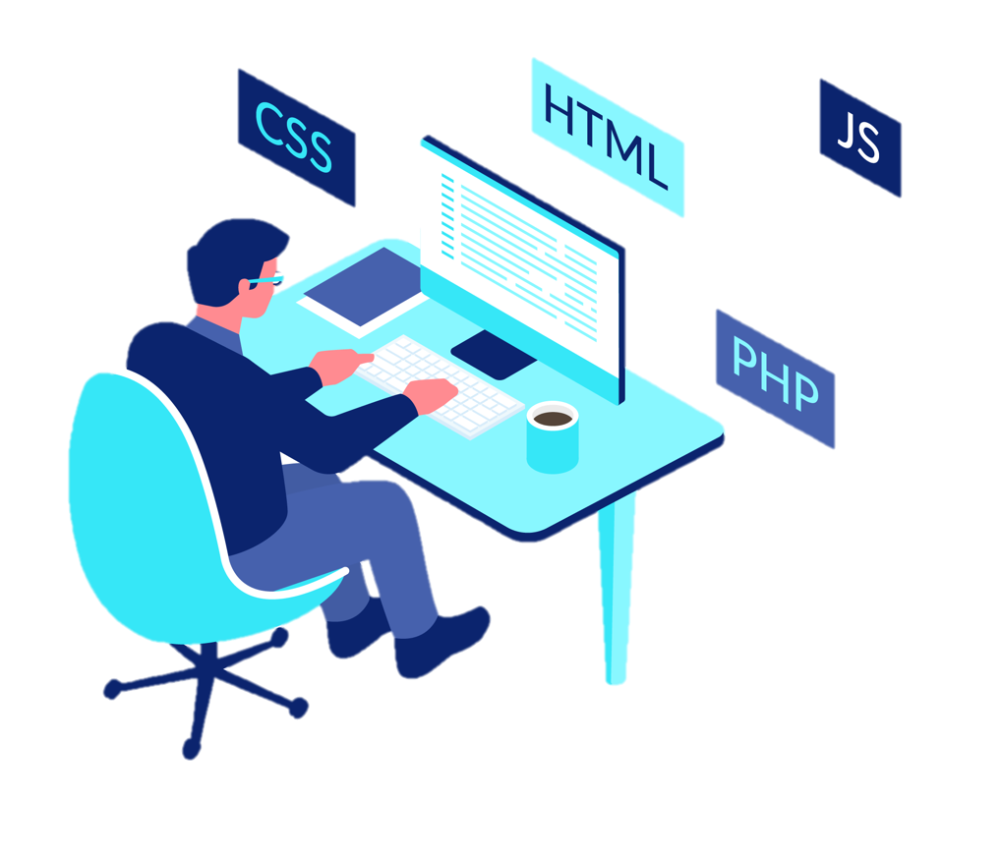

Programación en Internet II
Permite la creacion de sitios dinamicos en internet, esto se consigue generando los contenidos del sitio a través de una base de datos mediante lenguajes de programación.
Lenguajes de Programación mas Conocidos
- Java
- JavaScript
- Ruby
- PHP
- Python
- C++
- C#
- Perl
¿Qué son los lenguajes de Programacion Web?

Pueden programar instrucciones y operaciones logicas complejas